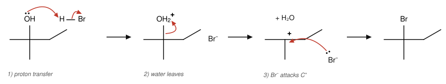
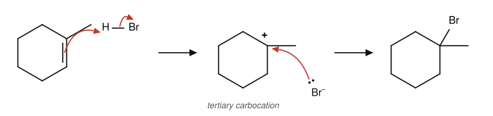
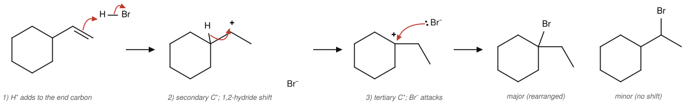
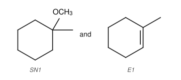
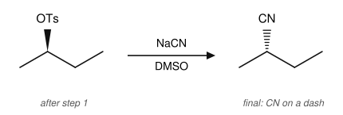
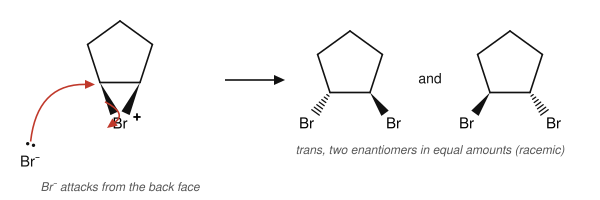
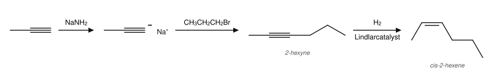

Your Test 4 plan, day by day
This is your plan to Test 4 on Thursday. Each day lists what to do, in order, and the walkthroughs for that day. The walkthroughs teach the Readiness Check problems one step at a time, and each one ends with practice for today and a problem for tomorrow.
How to use the walkthroughs
- Read the rule. Each walkthrough starts with the rule in one sentence.
- Answer each step on paper first. Write your answer, then open the answer to check it. Open the hint only if you're stuck, then try again before you look at the answer.
- Practice today, with your notes. Work the practice problem the same day, out loud if you can.
- Tomorrow, on your own. Work the next-day problem cold: no notes, no hints, before you open its answer. Only this one shows what you can do on your own.
- Redraw. Also tomorrow, redraw the original problem from blank paper.
The steps always run in the same order: read the structure, name the reagent's job, choose the pathway, draw the arrows, draw the product, say why. Stop at the first step you can't do. That step is what to learn next; the rest can wait until you have it.
Match what you do next to the kind of miss:
- You can't say what the reagent does: go back to its reagent card, then try a new molecule with the same reagent.
- You know the reagent's job but drew the wrong product: you don't need to relearn the reagent. Number the carbons, redraw, then try a new molecule with the same reagent.
- Right product, wrong or missing arrows: redo only the arrows, then try the practice problem.
- Right answer, but you can't say why: answer the why question again tomorrow, before anything else.
Keeping your record honest:
- Work done with help, or in the same session as the teaching, is practice, not mastery.
- A skill counts as mastered only after you get it right on your own on two different days. The lessons in the app keep that record; this page records nothing.
- Every arrow starts at an electron pair (a lone pair or a bond) and ends where that pair goes. If an arrow starts at an atom, an H or a + charge, stop and fix it before you go on.
Sunday, Nov 15 · Session 1: curved arrows, carbocations and shifts
Chemistry: 75 minutes, also on your calendar. Do the list in order. The minutes are estimates: if time runs out, stop, and what's left joins the "if time" list. The "if time" items are for review when a miss points to them, not requirements.
- Readiness Check follow-up questions, cold. Your tutor has these; they are not in the app. (15 min)
- Curved arrows lesson in the Chemistry classroom. (15 min) Open the lesson
- Walkthroughs below: Problems 1, 2 and 6 (carbocations, then the hydride and methyl shifts). (45 min)
Biology: Exam 3 study block.
Problem 1: a tertiary alcohol with HBr
The rule: With HBr, the acid turns the OH into water, water leaves on its own, and Br⁻ bonds to the carbocation. That's SN1.
2-methyl-2-butanol + HBr → 2-bromo-2-methylbutane
On paper: work each step below before you open its answer.
Which carbon holds the OH, and how many carbons is it bonded to?
Hint
Answer (after you've written yours)
HBr is two pieces. What does each piece do?
Hint
Answer (after you've written yours)
Can Br⁻ come in from the back of that carbon?
Hint
Answer (after you've written yours)
Where does the first arrow start?
Hint
Answer (after you've written yours)
What leaves, and which electrons go with it?
Hint
Answer (after you've written yours)
What bonds to the carbocation?
Answer (after you've written yours)
Is there a stereocenter?
Answer (after you've written yours)
Why couldn't 1-butanol react with HBr this way?
Answer (after you've written yours)
Show the whole mechanism, drawn (after your own drawing)

Practice today, with your notes
- 1-methylcyclohexanol + HBr. Draw the product and the full mechanism.
Answer
1-bromo-1-methylcyclohexane, by SN1: protonation, water leaves, Br⁻ attacks.
Tomorrow, on your own (no notes, no hints)
The first one is the one to do. The rest are for if you have time.
- 2-methyl-2-pentanol + HCl. Draw the product and the full mechanism.
Answer (open only after you've worked it cold)
2-chloro-2-methylpentane, by SN1 in the same three steps. - 1-butanol + HBr. Draw the product and the SN2 arrows, and write one sentence on why it can't go through a carbocation.
Answer (open only after you've worked it cold)
1-bromobutane by SN2: the OH is protonated, then Br⁻ attacks the back of C1 as water leaves, in one step. A primary carbocation is too unstable to form.
Common mistakes: An arrow drawn from the H to the O (backwards). A missing + charge on the O. OH⁻ leaving instead of water. Br on a different carbon from where the OH was.
Problem 2: HBr adds to an alkene (Markovnikov)
The rule: The C=C bond grabs the H first. The H goes where it leaves the more stable carbocation, and Br⁻ bonds to the + carbon.
1-methylcyclohexene + HBr → 1-bromo-1-methylcyclohexane
On paper: work each step below before you open its answer.
Number the two C=C carbons. What is attached to each?
Hint
Answer (after you've written yours)
What gets added to the double bond, and in what order?
Answer (after you've written yours)
There's no lone pair on the alkene. What electrons attack the H?
Hint
Answer (after you've written yours)
Draw both choices. If H goes on C2, what kind of carbocation is left on C1? If H goes on C1?
Hint
Answer (after you've written yours)
Where does the Br⁻ go?
Answer (after you've written yours)
How would you get Br on C2 instead?
Answer (after you've written yours)
Show the whole mechanism, drawn (after your own drawing)

Practice today, with your notes
- 2-methyl-2-butene + HBr. Draw the product and both steps of the mechanism.
Answer
2-bromo-2-methylbutane (H on C3, tertiary C⁺ on C2).
Tomorrow, on your own (no notes, no hints)
The first one is the one to do. The rest are for if you have time.
- 1-methylcyclopentene + HCl. Draw the product and the mechanism.
Answer (open only after you've worked it cold)
1-chloro-1-methylcyclopentane. - Product only: 2-methyl-2-butene + HBr with ROOR.
Answer (open only after you've worked it cold)
2-bromo-3-methylbutane, both enantiomers.
Common mistakes: The first arrow starting at the H. Br on the carbon that got the H. Skipping the comparison in step 4 and guessing.
Problem 6: check for a carbocation rearrangement
The rule: Every time a carbocation forms, look at the carbons right next to it. If moving an H or a CH₃ from a neighbor makes a more stable carbocation, it moves first, and then the nucleophile bonds.
vinylcyclohexane + HBr → 1-bromo-1-ethylcyclohexane (major), through a hydride shift
On paper: work each step below before you open its answer.
Where is the C=C, and what is the carbon right next to it?
Answer (after you've written yours)
Which C=C carbon gets the H?
Answer (after you've written yours)
Look at the ring carbon next to the C⁺. If its H moved over, what would that ring carbon become?
Hint
Answer (after you've written yours)
Which electrons move?
Hint
Answer (after you've written yours)
Where does Br⁻ bond now?
Answer (after you've written yours)
What would you get if Br⁻ attacked before the shift?
Answer (after you've written yours)
Show the whole mechanism, drawn (after your own drawing)

Show it drawn (after your own drawing)
Practice today, with your notes
- 3-methyl-1-butene + HBr. Draw the major and minor products and the full mechanism.
Answer
Major: 2-bromo-2-methylbutane (a hydride shift from C3 to the C2 carbocation). Minor: 2-bromo-3-methylbutane, both enantiomers.
Tomorrow, on your own (no notes, no hints)
The first one is the one to do. The rest are for if you have time.
- 3-methyl-1-pentene + HBr. Draw the major and minor products and the full mechanism.
Answer (open only after you've worked it cold)
Major: 3-bromo-3-methylpentane (a hydride shift from C3). Minor: 2-bromo-3-methylpentane; its stereochemistry isn't required. - 2,2-dimethyl-3-hexanol + HBr. Draw the product and the full mechanism, including the shift.
Answer (open only after you've worked it cold)
2-bromo-2,3-dimethylhexane, both enantiomers. Water leaves from C3 (secondary C⁺); C2 has no H, so a CH₃ shifts from C2 to C3 with its bonding pair; the + is now on C2 (tertiary), and Br⁻ bonds there. C3 is now a stereocenter.
Common mistakes: Stopping at the unrearranged product. Moving the H or CH₃ without its electrons (an arrow from the atom instead of from the bond). Br on the end carbon (that's the ROOR product).
Monday, Nov 16 · Session 2: reagents and products, substitution and elimination, keto-enol, epoxides
Chemistry: 75 minutes, also on your calendar. Do the list in order. The minutes are estimates: if time runs out, stop, and what's left joins the "if time" list. The "if time" items are for review when a miss points to them, not requirements.
- Cold, no notes: the first "tomorrow, on your own" problem under Problems 1, 2 and 6. Then redraw Problem 6 from blank paper. (15 min)
- The reagent cards below: say each job out loud, then open the card. Study only the ones you miss. (10 min)
- "Draw alone" problems in the Alkene reagents and Alkyne reagents lessons: draw every product and every stereoisomer before you check. Start with the reagents you missed on the cards. (10 min) Open Alkene reagents · Open Alkyne reagents
- Problems 4 and 5: substitution and elimination. (15 min)
- Problem 7: the keto-enol arrows, with acid and with base. (15 min)
- The epoxide walkthrough: acid opens the ring, every electron pair and byproduct. (10 min)
If time:
- The Test 4 checklist below (Chapters 8 and 9): say what each row does, then open it.
- Which carbocation is more stable: an O right next to the C⁺ (below).
- The ether walkthrough below.
- A one-page reagent chart from the rows you missed.
Biology: Exam 3 repair on your weakest topics, 40 min. Exam 3 is tomorrow: stop on time and sleep early.
The eight reagent cards
For each reagent, say its job out loud first, then open the card. Learn only the ones you miss: read the why, work the example, and try that reagent's practice problem tomorrow.
| Reagent | Card |
|---|---|
| 1. CH₃OH alone | Its jobJob: Weak nucleophile and weak base. On a tertiary halide it waits for the carbocation, then its O bonds to it: the product gets OCH₃ (SN1). It can also take a neighboring H (E1). Why: A neutral O is too weak to push a leaving group out (no SN2), but it can grab a carbocation. It keeps its CH₃ and loses only its H. Example: 3-bromo-3-ethylpentane in CH₃OH → 3-ethyl-3-methoxypentane (SN1) and 3-ethyl-2-pentene (E1) Wrong answer to catch: OH instead of OCH₃ |
| 2. TsCl, pyridine | Its jobJob: Turns OH into OTs, a good leaving group. The carbon keeps its stereochemistry. Why: The O attacks the S of TsCl. The C–O bond never breaks, so nothing happens at the carbon. Pyridine soaks up the HCl. Example: trans-2-methylcyclopentanol → trans-2-methylcyclopentyl tosylate (OTs still trans to the CH₃) Wrong answer to catch: Cl in the product; flipping the carbon at this step |
| 3. KOtBu | Its jobJob: Strong, bulky base: E2. When there is a choice, it makes the less substituted alkene. Why: It is too big to reach a crowded H, so it takes the most exposed one. Example: 2-bromo-2-methylbutane → 2-methyl-1-butene (major) and 2-methyl-2-butene (minor) Wrong answer to catch: An SN2 product with OtBu attached |
| 4. H₂SO₄, heat | Its jobJob: Protonates the OH so water leaves, then a neighboring H is lost: dehydration (E1) to the more substituted alkene. The carbocation can rearrange first. Why: Heat favors elimination, and HSO₄⁻ is too weak a nucleophile to stay on the carbon. Example: 2-methylcyclohexanol → 1-methylcyclohexene (major) Wrong answer to catch: Adding SO₄ or OH; a substitution product |
| 5. NaNH₂ | Its jobJob: Very strong base: removes the H on the end of a terminal alkyne, making an acetylide. The acetylide then does SN2 on a methyl or primary halide, making a new C–C bond. Why: The alkyne H has a pKa of about 25; NH₃ has a pKa of 38, so NH₂⁻ is strong enough to take it. Example: 1-hexyne + NaNH₂, then CH₃I → 2-heptyne Wrong answer to catch: Adding NH₂; using a secondary halide (E2 wins) |
| 6. H₂, Lindlar's catalyst | Its jobJob: Adds one H₂ to the same face (syn) and stops at the alkene: an internal alkyne gives the cis alkene. Why: The catalyst is "poisoned" so it can't reduce the alkene that forms. Example: 2-heptyne → cis-2-heptene Wrong answer to catch: Trans alkene (that's Na, NH₃); alkane (that's H₂, Pd) |
| 7. Br₂ in CCl₄ | Its jobJob: Adds one Br to each C=C carbon from opposite faces (anti), through a bromonium ion. Why: The bridging Br blocks one face, so Br⁻ must come in from the other. Example: Propene → 1,2-dibromopropane, both enantiomers (C2 becomes a stereocenter) Wrong answer to catch: Syn addition; only one Br |
| 8. BH₃·THF, then H₂O₂ and NaOH | Its jobJob: Adds H and OH to the same face (syn). The OH goes on the less substituted carbon (anti-Markovnikov). No rearrangement. Why: B goes to the less crowded carbon, and the oxidation swaps B for OH without moving it. Example: 1-methylcyclohexene (the alkene from Problem 2) → trans-2-methylcyclohexan-1-ol, both enantiomers. Compare: HBr put Br on C1; this puts OH on C2. Wrong answer to catch: OH on the more substituted carbon |
Practice today, with your notes
- Which of these bases can remove the H from the end of 1-hexyne (pKa about 25)? More than one may work. KOtBu (its conjugate acid, tert-butanol, has a pKa of about 18); NaNH₂ (NH₃, 38); CH₃CH₂CH₂CH₂Li (butane, an alkane: above 50); CH₃CO₂Na (acetic acid, 4.8).
Answer
NaNH₂ and CH₃CH₂CH₂CH₂Li. A base can take the H only if its conjugate acid is a weaker acid than the alkyne, which means a pKa above 25: 38 and above 50 both pass. KOtBu fails even though it is a strong base for E2: tert-butanol's pKa of about 18 is below 25. Sodium acetate (4.8) is far too weak.
Tomorrow, on your own: write each reagent's job from memory, then the product
- 2-chloro-2-methylbutane in CH₃OH
Answer (open only after you've worked it cold)
2-methoxy-2-methylbutane (SN1); 2-methyl-2-butene (E1, major alkene) and 2-methyl-1-butene (minor). - cis-3-methylcyclohexanol + TsCl, pyridine
Answer (open only after you've worked it cold)
cis-3-methylcyclohexyl tosylate (still cis). - 1-bromo-1-methylcyclohexane + KOtBu
Answer (open only after you've worked it cold)
Methylenecyclohexane (major); 1-methylcyclohexene (minor). - 1-methylcyclopentanol + H₂SO₄, heat
Answer (open only after you've worked it cold)
1-methylcyclopentene. - 1-hexyne + NaNH₂, then CH₃CH₂Br
Answer (open only after you've worked it cold)
3-octyne (CH₃CH₂C≡CCH₂CH₂CH₂CH₃): the acetylide's end carbon bonds to the CH₂ of bromoethane. - 5-decyne + H₂, Lindlar's catalyst
Answer (open only after you've worked it cold)
cis-5-decene. - 1-methylcyclohexene + Br₂ in CCl₄
Answer (open only after you've worked it cold)
trans-1,2-dibromo-1-methylcyclohexane, both enantiomers. - 1-ethylcyclohexene + BH₃·THF, then H₂O₂ and NaOH
Answer (open only after you've worked it cold)
trans-2-ethylcyclohexan-1-ol, both enantiomers.
Problem 4: the solvent is the nucleophile (SN1 and E1)
The rule: A tertiary halide in methanol, with no strong base: the halide leaves on its own. Then methanol either bonds to the carbocation (SN1, OCH₃) or takes a neighboring H (E1, an alkene).
1-chloro-1-methylcyclohexane in CH₃OH → 1-methoxy-1-methylcyclohexane and 1-methylcyclohexene
On paper: work each step below before you open its answer.
What kind of carbon holds the Cl?
Answer (after you've written yours)
Is CH₃OH a strong or weak nucleophile? A strong or weak base?
Answer (after you've written yours)
What does Dr. Meadows' tree say for tertiary, no strong base, no heat?
Answer (after you've written yours)
What happens first, before methanol does anything?
Hint
Answer (after you've written yours)
Instead of bonding, methanol can act as a base. Which H does it take?
Answer (after you've written yours)
Why does the product have OCH₃ and not OH?
Answer (after you've written yours)
Which alkene is the major one?
Answer (after you've written yours)
Show the whole mechanism, drawn (after your own drawing)

Practice today, with your notes
- 2-bromo-2-methylpropane in ethanol (CH₃CH₂OH). Both products and both mechanisms.
Answer
2-ethoxy-2-methylpropane (SN1); 2-methylpropene (E1).
Tomorrow, on your own (no notes, no hints)
- 1-bromo-1-methylcyclopentane in CH₃OH. The SN1 product, the major and minor E1 products, and the SN1 mechanism.
Answer (open only after you've worked it cold)
1-methoxy-1-methylcyclopentane (SN1); 1-methylcyclopentene (E1, major); methylenecyclopentane (E1, minor).
Common mistakes: OH instead of OCH₃ (the Test 3 slip). Methanol attacking before the Cl leaves (that's SN2, which can't happen at a tertiary carbon). Leaving the + charge on the O.
Problem 5: make a leaving group, then SN2 flips the carbon
The rule: TsCl turns the OH into a good leaving group without touching the carbon. Then a strong nucleophile comes in from the back (SN2), and the carbon flips.
2-butanol (OH on a wedge) → TsCl, pyridine → NaCN in DMSO → 2-methylbutanenitrile, CN on a dash
On paper: work each step below before you open its answer.
What kind of carbon holds the OH, and is it a stereocenter?
Answer (after you've written yours)
What does TsCl change, and what doesn't it change?
Hint
Answer (after you've written yours)
CN⁻, DMSO, secondary carbon. What does the tree say?
Answer (after you've written yours)
Where does the CN⁻'s arrow start, and which side does it come from?
Answer (after you've written yours)
OTs was on a wedge. Where is the CN?
Hint
Answer (after you've written yours)
How many carbons did you start with, and how many are in the product?
Answer (after you've written yours)
Why not just add NaCN to the alcohol?
Answer (after you've written yours)
Show the whole mechanism, drawn (after your own drawing)

Practice today, with your notes
- 2-pentanol with the OH on a dash → TsCl, pyridine → NaSCH₃ in DMSO. Draw both products with stereochemistry.
Answer
The tosylate with OTs on the dash; then 2-(methylthio)pentane with SCH₃ on a wedge.
Tomorrow, on your own (no notes, no hints)
- cis-4-methylcyclohexanol → TsCl, pyridine → NaCN in DMSO. Draw both products and say whether the final product is cis or trans.
Answer (open only after you've worked it cold)
cis-4-methylcyclohexyl tosylate; then trans-4-methylcyclohexane-1-carbonitrile (the flip turns cis into trans).
Common mistakes: Cl in a product (the Test 3 slip). The carbon flipping at the TsCl step. CN on the same wedge as the OTs. A 4-carbon product.
Problem 7: alkyne hydration and tautomerization
The rule: Water adds to the triple bond Markovnikov, giving an enol (an OH on a C=C). An enol never stays: it rearranges to the C=O form, a ketone.
1-pentyne + H₂SO₄, H₂O, HgSO₄ → 2-pentanone
On paper: work each step below before you open its answer.
Which triple-bond carbon has the H, and which is on the inside?
Answer (after you've written yours)
Where does the OH go?
Answer (after you've written yours)
The enol's C=C bond takes a proton from H₃O⁺. Which carbon gets the H, and where is the + left?
Hint
Answer (after you've written yours)
Draw the other resonance form of that cation. Which electrons move, and where does the + end up?
Hint
Answer (after you've written yours)
Start from the C=O⁺–H form. What takes the H, and where do the O–H bond's electrons go?
Hint
Answer (after you've written yours)
Ketone or aldehyde, and why?
Answer (after you've written yours)
How would you make the aldehyde instead?
Answer (after you've written yours)
Show the acid tautomerization, drawn (after your own drawing)
Show it drawn (after your own drawing)
Practice today, with your notes
- 1-hexyne + H₂SO₄, H₂O, HgSO₄. The enol, the ketone, and the acid tautomerization arrows.
Answer
The enol with OH on C2, then 2-hexanone.
Tomorrow, on your own (no notes, no hints)
The first one is the one to do. The rest are for if you have time.
- 1-hexyne + 9-BBN, then H₂O₂ and NaOH: the enol, the product, and the base tautomerization arrows with every electron pair and byproduct.
Answer (open only after you've worked it cold)
The enol with OH on C1, then hexanal. Base tautomerization: OH⁻ takes the O–H proton (water forms); the O⁻ lone pair makes C=O as the C=C pair moves onto C2; C2's lone pair takes an H from water (OH⁻ given back). - 3-hexyne + H₂SO₄, H₂O, HgSO₄, and why only one product forms.
Answer (open only after you've worked it cold)
3-hexanone. Only one product: the alkyne is symmetric, so the OH on either carbon gives the same ketone.
Common mistakes: Stopping at the enol. An aldehyde from the HgSO₄ conditions. An alcohol (no C=C left) as the answer. The first acid arrow starting at the H₃O⁺ instead of the C=C bond. In the C=O⁺–H form, an arrow from the O–H bond into the C–O bond. The π bond is already there, so the O–H pair goes back onto the O. Leaving out a byproduct (H₃O⁺ with acid, OH⁻ with base).
Opening an epoxide with acid
The rule: Acid puts a + charge on the epoxide O, which makes the strained ring easy to open. The nucleophile attacks a ring carbon from the back, the ring opens, and a last proton transfer gives a neutral product.
cyclopentene oxide + dilute H₂SO₄ (water is the nucleophile) → trans-1,2-cyclopentanediol, both enantiomers
On paper: work each step below before you open its answer.
Why does a three-membered ring with an O react so easily?
Answer (after you've written yours)
What does the acid do first?
Answer (after you've written yours)
Which face does water attack from?
Answer (after you've written yours)
The new O has a + charge and two H. What happens?
Answer (after you've written yours)
Are the two OH groups cis or trans?
Answer (after you've written yours)
Practice today, with your notes
- 2,2-dimethyloxirane + CH₃OH with H₂SO₄: the product and all three mechanism steps. Then the product only for the same epoxide + NaOCH₃ in CH₃OH.
Answer
With acid: 2-methoxy-2-methylpropan-1-ol (OCH₃ on the more substituted carbon). With NaOCH₃: 1-methoxy-2-methylpropan-2-ol (OCH₃ on the less crowded carbon).
Tomorrow, on your own (no notes, no hints)
- 1-methylcyclopentene + mCPBA, then H₃O⁺. Draw the epoxide, the final product with stereochemistry, and the ring-opening mechanism with byproducts.
Answer (open only after you've worked it cold)
The epoxide, then 1-methylcyclopentane-1,2-diol with the two OH trans, both enantiomers. Water attacks C1, the more substituted carbon.
Common mistakes: Water attacking before the O is protonated. Both OH on the same face. Leaving out H₃O⁺ as a byproduct.
Test 4 checklist: Chapters 8 and 9
Say what each reagent does from memory, then open the row. Put every row on your one-page reagent chart. Each example is a new molecule.
| Ch. | Reaction and reagents | |
|---|---|---|
| 8 | Acid-catalyzed hydration Dilute H₂SO₄ (H₃O⁺) | What it doesMarkovnikov OH; the carbocation can rearrange Example: 1-methylcyclohexene → 1-methylcyclohexanol |
| 8 | Oxymercuration Hg(OAc)₂, H₂O; then NaBH₄ | What it doesMarkovnikov OH, no rearrangement Example: 3-methyl-1-butene → 3-methyl-2-butanol, both enantiomers. Compare Problem 6's practice, where HBr does shift. |
| 8 | Alkoxymercuration Hg(OAc)₂, an alcohol; then NaBH₄ | What it doesMarkovnikov OR, no rearrangement Example: 1-hexene with CH₃OH → 2-methoxyhexane, both enantiomers |
| 8 | Alcohol with acid ROH, H₂SO₄ | What it doesMarkovnikov OR; the carbocation can rearrange Example: 2-methylpropene with CH₃OH → tert-butyl methyl ether (walkthrough above) |
| 8 | Halohydrin Br₂, H₂O | What it doesOH on the more substituted carbon, Br on the other, anti Example: 1-methylcyclohexene → trans-2-bromo-1-methylcyclohexan-1-ol, both enantiomers |
| 8 | HBr with peroxides HBr, ROOR | What it doesAnti-Markovnikov Br Example: 1-hexene → 1-bromohexane |
| 8 | Hydrogenation H₂ with Pd, Pt or Ni | What it doesAdds H₂ to the same face; alkene to alkane Example: 1,2-dimethylcyclohexene → cis-1,2-dimethylcyclohexane (meso) |
| 8 | Syn dihydroxylation OsO₄; then NaHSO₃, H₂O | What it doesTwo OH on the same face Example: (Z)-4-octene → meso-octane-4,5-diol |
| 8 | Anti dihydroxylation RCO₃H (such as mCPBA); then H₃O⁺ | What it doesEpoxide, then two OH on opposite faces Example: Cyclopentene → trans-1,2-cyclopentanediol, both enantiomers (epoxide walkthrough, Monday) |
| 8 | Ozonolysis O₃; then DMS | What it doesCuts the C=C; each carbon gets a C=O. A ring C=C gives one molecule with two C=O groups. Example: 1-methylcyclohexene → 6-oxoheptanal |
| 9 | Choosing a base for an alkyne Compare pKa values | What it doesA base works only if its conjugate acid's pKa is above 25 (the alkyne H) Example: NaNH₂ works (NH₃, 38); NaOH doesn't (H₂O, 15.7) |
| 9 | Making an alkyne Br₂; then excess NaNH₂; then H₂O | What it doesTwo E2 eliminations remove two HBr Example: 1-hexene → 1,2-dibromohexane → 1-hexyne |
| 9 | HBr, two equivalents 2 HBr | What it doesMarkovnikov twice: both Br on the same carbon Example: 1-hexyne → 2,2-dibromohexane |
| 9 | Br₂, excess 2 Br₂ | What it doesTwo Br on each former alkyne carbon Example: 1-hexyne → 1,1,2,2-tetrabromohexane |
| 9 | Alkyne ozonolysis O₃; then H₂O | What it doesEach alkyne carbon becomes COOH; a terminal CH becomes CO₂. A ring alkyne opens into one molecule with a COOH at each end. Example: 3-hexyne → two propanoic acids; cyclooctyne → octanedioic acid (one molecule) |
Show the ring alkyne example, drawn
New: which carbocation is more stable? Look for an O right next to the C⁺
The rule: A C⁺ with an O bonded directly to it is extra stable, because the O shares a lone pair and makes a C=O⁺ form in which every atom has an octet. The O has to be bonded to the C⁺ itself; one carbon farther away, it can't share.
Rank these three cations from most to least stable: A, the C⁺ on C1 of 1-methoxybutane; B, the tertiary C⁺ of 2-methylbutane; C, a CH₂⁺ with the O on the next carbon over (CH₃O–CH₂–CH₂⁺)
On paper: work each step below before you open its answer.
For each cation, how many carbons are bonded to the C⁺, and is an O bonded to it?
Hint
Answer (after you've written yours)
In which cation can an O lone pair form a double bond to the C⁺? Draw that form.
Hint
Answer (after you've written yours)
Most stable to least stable?
Answer (after you've written yours)
Why does an octet on every atom matter so much?
Answer (after you've written yours)
Show the cations and A's resonance form, drawn (after your own drawing)
Practice today, with your notes
- Which is more stable, and why: the C⁺ on C1 of 1-methoxycyclohexane (the OCH₃ is on the + carbon), or the C⁺ on C2 of methoxycyclohexane (the OCH₃ is on the next carbon)?
Answer
The first one. Its O is bonded to the C⁺ and shares a lone pair (C=O⁺ form). In the second, the O is one carbon away and can't share; that cation is just secondary.
Tomorrow, on your own (no notes, no hints)
- Rank from most to least stable, and draw the resonance form for the winner: (CH₃)₂CH⁺ (isopropyl), (CH₃)₃C⁺ (tert-butyl), and CH₃–CH⁺–O–CH₂CH₃.
Answer (open only after you've worked it cold)
CH₃–CH⁺–O–CH₂CH₃ > (CH₃)₃C⁺ > (CH₃)₂CH⁺. The first has an O bonded to the C⁺ that shares a lone pair (CH₃–CH=O⁺–CH₂CH₃); tert-butyl is tertiary; isopropyl is secondary.
Common mistakes: Ranking only by counting carbons and ignoring the O. Giving credit to an O on a neighboring carbon instead of on the C⁺ itself. Drawing the resonance arrow from the C⁺ toward the O (arrows start at the lone pair).
New: an alcohol adds across a C=C with acid (makes an ether)
The rule: With a strong acid in an alcohol, the C=C takes an H⁺ (Markovnikov), the alcohol's O bonds to the carbocation, and a proton transfer gives an ether. It's the same as acid-catalyzed hydration, with ROH in place of water, and the carbocation can rearrange.
2-methylpropene + CH₃OH, H₂SO₄ → tert-butyl methyl ether (2-methoxy-2-methylpropane)
On paper: work each step below before you open its answer.
Which C=C carbon holds more carbons?
Answer (after you've written yours)
What does the H₂SO₄ do, and what does the CH₃OH do?
Answer (after you've written yours)
Where do the first two arrows go, and where does the + end up?
Hint
Answer (after you've written yours)
Could an H or CH₃ shift make this carbocation more stable?
Answer (after you've written yours)
What bonds to the C⁺?
Answer (after you've written yours)
How does the O lose its +?
Answer (after you've written yours)
Show the whole mechanism, drawn (after your own drawing)
Practice today, with your notes
- 1-methylcyclopentene + CH₃CH₂OH, H₂SO₄. The product and all three mechanism steps.
Answer
1-ethoxy-1-methylcyclopentane. The H goes on C2, the tertiary C⁺ is on C1, ethanol's O bonds there, and a second ethanol takes the H off the O.
Tomorrow, on your own (no notes, no hints)
- 3-methyl-1-butene + CH₃CH₂OH, H₂SO₄. The major product and the full mechanism. Then, product only: the same alkene with Hg(OAc)₂ in CH₃CH₂OH, then NaBH₄.
Answer (open only after you've worked it cold)
With acid: 2-ethoxy-2-methylbutane. The H goes on C1, giving a secondary C⁺ on C2; a hydride shifts from C3, putting the + on C3 (tertiary), and ethanol bonds there. Numbered for the product's name, that carbon is C2. With alkoxymercuration: 2-ethoxy-3-methylbutane, both enantiomers, with no shift.
Common mistakes: OH instead of OR (water isn't the nucleophile here). Forgetting the last proton transfer, leaving O⁺ in the product. Missing the hydride shift when the first carbocation is secondary.
Tuesday, Nov 17 · Session 3 (evening, after Biology Exam 3): stereochemistry, synthesis, NMR
Chemistry: 55 minutes, also on your calendar. Do the list in order. The minutes are estimates: if time runs out, stop, and what's left joins the "if time" list. The "if time" items are for review when a miss points to them, not requirements.
- Cold, no notes: the first "tomorrow, on your own" problem under Problems 4, 5 and 7. (10 min)
- Problem 3 with a model kit: Br₂ adds anti, racemic or meso. (10 min)
- Part 4 synthesis: the walkthrough, the scoring checklist, and the exam-format practice. (20 min)
- ¹H-NMR: read a spectrum, then choose the one that matches. (15 min)
If time:
- If a review is due in a Chemistry lesson, do it.
- Monday's other "on your own" problems, including the reagent card practice.
Biology: Exam 3 today. Chemistry class: Chapter 9 practice lecture.
Problem 3: Br₂ adds anti, racemic or meso
The rule: Br₂ puts one Br on each C=C carbon. The first Br bridges both carbons and blocks that face, so the second Br comes in from the opposite face.
cyclopentene + Br₂ in CCl₄ → trans-1,2-dibromocyclopentane, both enantiomers. Use a model kit for this one.
On paper: work each step below before you open its answer.
How many carbons, and what is on each C=C carbon?
Answer (after you've written yours)
What does Br₂ add, and from which faces?
Answer (after you've written yours)
The π bond attacks one Br. What else has to move?
Hint
Answer (after you've written yours)
The top face is blocked. Where does Br⁻ come in?
Answer (after you've written yours)
Which Br is on a wedge and which on a dash?
Hint
Answer (after you've written yours)
Is your product the same as its mirror image?
Hint
Answer (after you've written yours)
Show the whole mechanism, drawn (after your own drawing)

Practice today, with your notes
- cyclohexene + Br₂. The product with wedge and dash, and say racemic or meso.
Answer
trans-1,2-dibromocyclohexane, (1R,2R) and (1S,2S): racemic.
Tomorrow, on your own (no notes, no hints)
The first one is the one to do. The rest are for if you have time.
- (Z)-3-hexene + Br₂. Draw the product with wedges and dashes and say racemic or meso.
Answer (open only after you've worked it cold)
(3R,4R)- and (3S,4S)-3,4-dibromohexane: racemic. - (E)-3-hexene + Br₂. Draw the product with wedges and dashes and say racemic or meso.
Answer (open only after you've worked it cold)
(3R,4S)-3,4-dibromohexane: meso.
Common mistakes: Both Br on wedges. If you said "anti" in step 2, that's a drawing slip; if you said "syn", relearn the bromonium ion. Calling a trans ring product meso. Drawing only one enantiomer without writing "racemic".
Part 4: working a synthesis backward
The rule: Start from the product. Count its carbons, find the bond you have to make, make that bond with an acetylide and a primary halide, then pick the reduction that gives the right alkene.
propyne → cis-2-hexene
On paper: work each step below before you open its answer.
How many carbons in the product? In the starting material? How many do you need to add?
Hint
Answer (after you've written yours)
Which bond in the product didn't exist in propyne?
Answer (after you've written yours)
What reagent makes a cis alkene, and what does it start from?
Answer (after you've written yours)
How do you make a new C–C bond on the end of propyne?
Hint
Answer (after you've written yours)
Write each reagent over an arrow and draw each molecule you make.
Answer (after you've written yours)
Show the whole mechanism, drawn (after your own drawing)

- Carbons: count the product's carbons and circle which starting material each one came from. Every carbon must come from the starting materials you were given.
- The new C–C bond: point to it, and name the reaction that makes it. In Chapters 8 and 9 that is an acetylide plus an alkyl halide.
- Every intermediate is drawn, in order, not just named.
- Reagents over every arrow, in the right order. Number them when one arrow has two steps (1. 9-BBN 2. H₂O₂, NaOH).
- Stereochemistry: cis or trans, wedge or dash, and "both enantiomers" where it applies, from a reagent that really gives it.
- Two observations, written before the route. For example: how many carbons each starting material gives the product; which bond is new; what has to change in a starting material before the C–C bond step; what the product's C=C or C=O needs.
Practice today, with your notes
- Exam format. Starting materials: 3-methyl-1-butene and bromoethane. Target: (Z)-2-methyl-3-hexene. Every carbon must come from the two starting materials. Write two observations, then the route forward with every reagent and every intermediate drawn.
Answer
Observations: the product has 7 carbons, 5 from 3-methyl-1-butene and 2 from bromoethane, so one new C–C bond joins them; the product's C=C is cis, so the last step is H₂ with Lindlar's catalyst. Route: 3-methyl-1-butene → (Br₂, CCl₄) 1,2-dibromo-3-methylbutane → (excess NaNH₂) the acetylide of 3-methyl-1-butyne → (CH₃CH₂Br) 2-methyl-3-hexyne → (H₂, Lindlar's catalyst) (Z)-2-methyl-3-hexene.
Tomorrow, on your own (no notes, no hints)
The first one is the one to do. The rest are for if you have time.
- Wednesday, before the practice test: cold and timed at 12 minutes, then score it with the checklist. Starting materials: 2-bromopentane and 1-pentyne. Target: (E)-4-decene. Every carbon must come from the two starting materials. Write two observations, then the route forward with every reagent and intermediate drawn.
Answer (open only after you've worked it cold)
Observations: the product is one straight chain of 10 carbons, 5 from 1-pentyne and 5 from 2-bromopentane, joined by one new C–C bond; the Br is on C2, but a straight chain needs the new bond at C1, so the Br has to move to the end carbon first; the C=C is trans, so the last step is Na in NH₃. Route: 2-bromopentane → (KOtBu) 1-pentene → (HBr, ROOR) 1-bromopentane. 1-pentyne → (NaNH₂) its acetylide → (1-bromopentane) 4-decyne → (Na, NH₃) (E)-4-decene. Joining the acetylide to 2-bromopentane itself would put a branch in the chain. - If time: make trans-4-octene. Every carbon must come from acetylene and alkyl halides with 3 carbons or fewer.
Answer (open only after you've worked it cold)
Acetylene + NaNH₂; CH₃CH₂CH₂Br (1-pentyne); NaNH₂; CH₃CH₂CH₂Br (4-octyne); Na, NH₃. Hint, if you needed it: it takes two alkylations. - Challenge, if time: make 5-decanone from 1-hexyne and any alkyl halide.
Answer (open only after you've worked it cold)
NaNH₂; then CH₃CH₂CH₂CH₂Br (gives 5-decyne); then H₂SO₄, H₂O, HgSO₄. The alkyne is symmetric, so only one ketone forms.
Common mistakes: A secondary halide. NaOH as the base (too weak to remove the alkyne H). The wrong reduction for cis or trans. Skipping the drawn intermediates (Dr. Meadows grades every molecule along the route).
¹H-NMR: read a spectrum, then choose the one that matches
The rule: Each set of matching H atoms gives one signal. The number printed over a signal (its integration) says how many H are in the set, its position says what is nearby, and its splitting says how many H sit on the neighboring carbons.
Last year's Test 4 had one ¹H-NMR question, worth 6 of its 160 points: circle the predicted spectrum that belongs to a molecule. Expect one this year too. That isn't confirmed, so ask Dr. Meadows if you want to be sure.
On paper: work each step below before you open its answer.
Which way does the ppm scale run, and what is the number printed over each signal?
Hint
Answer (after you've written yours)
Which H atoms in this molecule match each other?
Hint
Answer (after you've written yours)
How many H are in each set?
Answer (after you've written yours)
What is right next to each set of H atoms?
Answer (after you've written yours)
How many H are on the carbons right next to this set?
Hint
Answer (after you've written yours)
Which spectrum, A, B or C, belongs to diethyl ether, CH₃CH₂–O–CH₂CH₃? Rule out each wrong one with the first clue it fails.
Hint
Answer (after you've written yours)
Practice today, with your notes
- Last year's NMR question was one part of a three-part problem on a single reaction. Try that format: ? + 9-BBN; then H₂O₂ and NaOH → pentanal. (a) Draw the starting material. (b) Predict its ¹H-NMR spectrum: how many signals, and each one's integration, splitting and shift range. (c) Draw the base tautomerization with every electron pair and byproduct.
Answer
(a) 1-pentyne: 9-BBN puts the O on the end carbon, and the enol becomes the aldehyde. (b) Four signals. The CH₃: 3H, triplet, alkyl range. The middle CH₂: 2H, sextet (5 H next door), alkyl range. The CH₂ next to the triple bond: 2H, triplet, alkyne range. The ≡C–H: 1H, singlet, because the carbon next to it has no H. Measured shifts (SDBS): 1.00, 1.55, 2.15 and 1.94 ppm. (c) The three moves in Problem 7's base drawing, with water formed in the first and OH⁻ given back in the last.
Tomorrow, on your own (no notes, no hints)
The first one is the one to do. The rest are for if you have time.
- Wednesday, before the practice test, cold (3 minutes): which spectrum, A, B or C, belongs to 2-propanol, (CH₃)₂CH–OH? Say which clue rules out each wrong one.
Answer (open only after you've worked it cold)
A. 2-propanol has three signals: 6H, a doublet (the two CH₃ groups have 1 H next door); 1H, a septet near 4.0 ppm (the CH has 6 H next door and is bonded to the O); and the 1H O–H singlet. B has four signals (3:2:2:1), with a 2H triplet near 3.6 ppm: that is 1-propanol, CH₃CH₂CH₂OH. C has two singlets, 9H and 1H: that is tert-butyl alcohol, whose CH₃ groups have no H next door. - If time: for 2-butanone, predict how many signals, the integration and splitting of each, and which range of the table each falls in.
Answer (open only after you've worked it cold)
Three signals. The CH₃ at the end of the ethyl group: 3H, triplet, alkyl range (about 0.7 to 1.3 ppm). The CH₃ on the C=O: 3H, singlet, next-to-C=O range (2.0 to 2.7). The CH₂: 2H, quartet, also next-to-C=O range. This applies the rules and the table; it was not read from a measured spectrum.
Common mistakes: Reading the axis as if it ran from 0 on the left. Counting each peak of a multiplet as its own signal. Taking the number of peaks as the number of H. Choosing on shift alone without checking integration and splitting.
Wednesday, Nov 18 · Timed practice test
Chemistry: 98 minutes, also on your calendar. Do the list in order. The minutes are estimates: if time runs out, stop, and what's left joins the "if time" list. The "if time" items are for review when a miss points to them, not requirements.
- Cold, before the test: Tuesday's exam-format synthesis, timed at 12 minutes and scored with the checklist, then the spectrum choice (3 minutes). Take a short break after. (15 min)
- Last year's Test 4 on paper, timed at 53 minutes without stopping (your tutor has the copy). (53 min)
- Grade it with its key first. Use the rest of this time to redraw every missed product and mechanism from blank paper, and reread the walkthrough each miss points to. (30 min)
If time:
- Problem 3's "on your own" problems.
Biology: Lower Limb lab.
Thursday, Nov 19 · Test 4
Chemistry: 15 minutes, also on your calendar. Do the list in order. The minutes are estimates: if time runs out, stop, and what's left joins the "if time" list. The "if time" items are for review when a miss points to them, not requirements.
- Warm-up from blank paper: redraw the mechanisms you missed on Wednesday. If you missed none, redraw the base tautomerization, a hydride shift and Br₂ adding anti. No new material today. (15 min)
The walkthroughs teach the Readiness Check problems. Last year's Test 4 is your Wednesday practice test, so none of its answers appears on this page. Every molecule here was checked by the build against last year's test and against the answers to the app's Draw alone problems. This page records nothing. Practice support only: follow your instructor's rules for graded work.